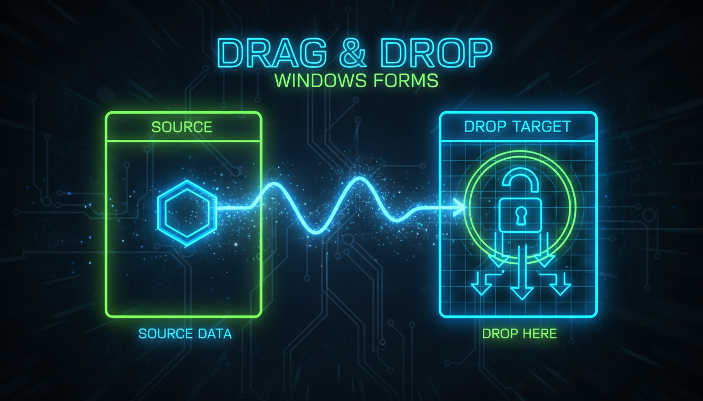

Перетягування, DoDragDrop, ефекти, AllowDrop

// Джерело перетягування
void OnMouseDown(Object^ sender, MouseEventArgs^ e) {
if (e->Button == MouseButtons::Left) {
Label^ lbl = (Label^)sender;
DoDragDrop(lbl->Text, DragDropEffects::Copy);
}
}
// Ціль перетягування
void OnDragEnter(Object^ sender, DragEventArgs^ e) {
if (e->Data->GetDataPresent(DataFormats::Text)) {
e->Effect = DragDropEffects::Copy;
}
}
void OnDragDrop(Object^ sender, DragEventArgs^ e) {
String^ text = (String^)e->Data->GetData(DataFormats::Text);
TextBox^ txt = (TextBox^)sender;
txt->Text = text;
}
// Налаштування
sourceLabel->MouseDown += gcnew MouseEventHandler(
this, &MyForm::OnMouseDown);
targetTextBox->AllowDrop = true;
targetTextBox->DragEnter += gcnew DragEventHandler(
this, &MyForm::OnDragEnter);
targetTextBox->DragDrop += gcnew DragEventHandler(
this, &MyForm::OnDragDrop);